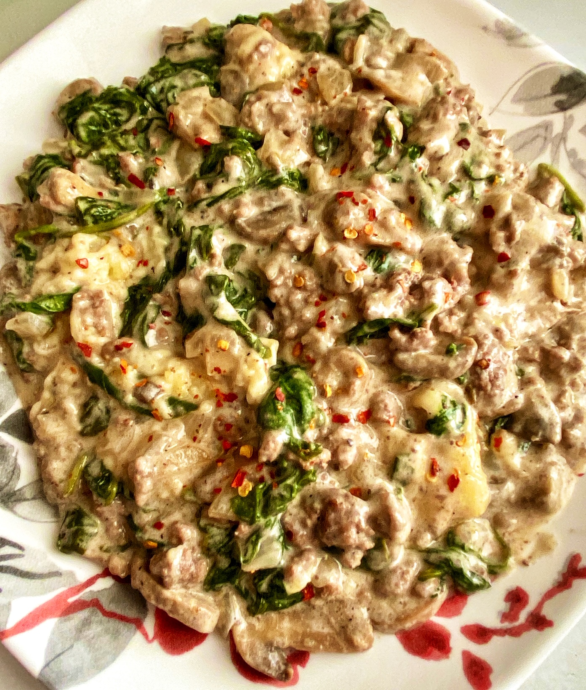

Ground Beef-Spinach Casserole

This is a great ground beef casserole. Even my husband who doesn't care for spinach likes this one!
And it got rave reviews when I took it to a church potluck.
Ingredients
- 1 pound ground beef
- 1 medium onion, chopped
- 1 clove garlic, minced, or more to taste
- 1 (10 ounce) can sliced mushrooms, drained
- 1 teaspoon dried oregano
- 2 dashes hot pepper sauce, or more to taste
- salt and ground black pepper to taste
- 2 (10 ounce) packages frozen chopped spinach, thawed and drained
- 1 (10 ounce) can condensed cream of celery soup
- 1 cup sour cream
- 1 (8 ounce) package grated mozzarella cheese
Steps
- Preheat the oven to 350 degrees F (175 degrees C).
- Heat a large skillet over medium-high heat. Cook and stir ground beef, onion, and garlic in the hot skillet until beef is browned and crumbly, 5 to 7 minutes. Drain and discard grease. Add mushrooms, oregano, hot sauce, salt, and pepper. Simmer for 5 minutes. Add spinach, soup, and sour cream; cook until heated through, about 5 minutes.
- Transfer to a casserole dish and cover with mozzarella cheese.
- Bake in the preheated oven until cheese is melted, 15 to 20 minutes.
Home